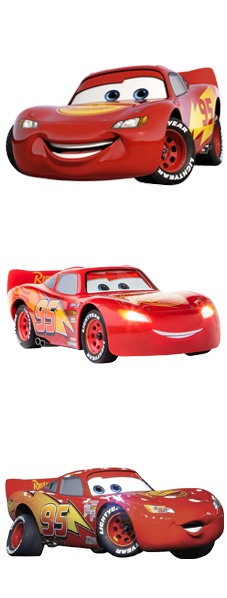
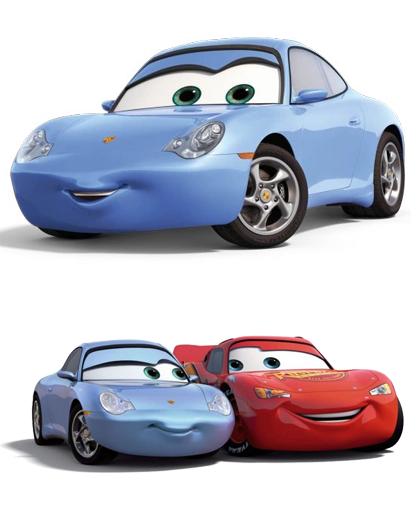

(Маккуин)
Молния — профессиональный гонщик в гоночной серии «Кубок Поршня», реальным прототипом является серия Кубка NASCAR. Он завоевал 7 кубков в 2006-2016. В «Тачках 2» он участвует в Мировом Гран-при, мероприятии, продвигая новое топливо под названием «Аллинол»...

(Салли Каррера)
Салли — возлюбленная гонщика Кубка Поршня Молнии Маккуина, которого она впервые встретила, когда он был приговорён к исправительным работам после разрушения главной дороги Радиатор-Спрингс...